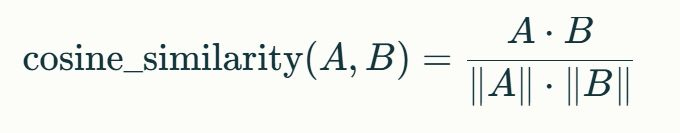
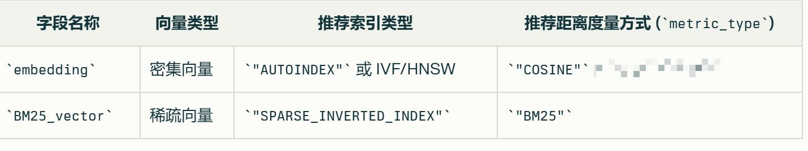

Milvus数据库里面，AUTOINDEX 它是索引类型，用于哪个字段以及为什么使用它呢？
用于embedding字段，让 Milvus 自动选择最优的索引类型（如 IVF_FLAT 或 HNSW）。
Milvus数据库里面，计算嵌入向量的相关度的时候。 需要考虑模长，那么这种情况下选择哪种度量方式呢？
可以选择内积（IP）或欧几里得距离（L2）。
使用余弦相似度的算法来计算查询向量跟文档向量之间的相似度之前需要进行什么处理？需要确保什么？
需要确保查询和文档都经过相同的嵌入模型处理。
而且都经过相同的方式进行归一化。
Milvus数据库里面，
如果你使用 COSINE 度量方式，则必须对查询和存储的向量都进行同样的归一化。这个归一化是消除了谁的干扰？
消除了模长对检索结果的干扰.
“SPARSE_INVERTED_INDEX” SPARSE 应该如何理解？
英文意思是 “稀疏的”“稀少的”，在计算机领域中，通常用来描述一种数据结构或数据分布的特征，即数据中存在大量的空值或零值，数据元素在空间中的分布是不密集的。
Milvus数据库里面，
如果你使用 COSINE 度量方式，则必须进行什么样的操作？
对查询和存储的向量都进行同样的归一化。
使用的 SBERT 模型在最后包含一个归一化层（通常称为 Normalize 模块），它的作用是什么呢？
把输出的嵌入向量归一化为单位长度（即模长为 1）。
BM25_vector 字段，主流做法为什么是SPARSE_INVERTED_INDEX？
BM25_vector 是稀疏向量，他是专门为稀疏数据设计的索引。
“SPARSE_INVERTED_INDEX” 整体来说应该如何理解？
指的是一种 “稀疏倒置索引”，是一种特殊的数据结构，它将文档中的关键词等内容与包含这些内容的文档进行反向关联，并且这种索引结构具有稀疏性，即索引中的很多位置可能是空的或者对应很少的数据，通常用于高效地处理大规模文本数据的存储和检索，以减少存储空间并提高检索速度。
Milvus数据库里面，
BM25_vector 字段 对应的索引算法和度量方式分别是什么？
SPARSE_INVERTED_INDEX 结合 BM25。
文本检索跟语义检索，它们使用的是文本还是向量进行检索？
文本检索使用的是原始文本，
而语义检索使用的是嵌入后的查询向量。
对于语义匹配任务，主流的选择是什么？是用哪个度量方式？以及为什么?
用 COSINE 这个度量方式，因为它能高效的衡量查询与文档之间的语义相关性。
像 all-MiniLM-L6-v2 等许多流行的 SBERT 模型默认会对向量进行什么化 处理？
归一化。
Milvus数据库里面，选择在 embedding 字段中使用 COSINE（余弦相似度） 作为度量方式，为什么要确保查询向量和存储在数据库中的向量都需要经过相同的归一化处理？
因为语义匹配更关注向量之间的方向（即语义相关性），而不是它们的模长。
因为余弦相似度的计算公式是基于向量的方向，而不是大小。

归一化会将每个向量的模长（∥A∥ 和 ∥B∥）变为 1，这样计算时只比较向量的方向，而忽略其长度。
“SPARSE_INVERTED_INDEX” INVERTED 应该如何理解？
意思是 “反转的”“倒置的”。在信息检索等场景中，“倒置” 通常是指与常规的索引方式相反，不是从文档到内容的映射，而是从内容（如单词、关键词等）到文档的映射。
embedding字段和BM25_vector 字段，
他们分别的向量类型和推荐的索引类型以及推荐的距离度量方式是什么？
embedding，是密集向量，索引类型是"AUTOINDEX" 或 IVF/HNSW ，推荐的距离度量方式是"COSINE"，
BM25_vector，是稀疏向量，索引类型是"SPARSE_INVERTED_INDEX"，推荐的距离度量方式是"BM25"。

Sentence-BERT 是否会自动归一化嵌入向量？
是的，Sentence-BERT（SBERT）模型通常会对嵌入进行归一化，但这取决于具体的模型配置。
embedding字段和BM25_vector 字段，
他们分别的向量类型和推荐的索引类型 是什么？
embedding，是密集向量，索引类型是"AUTOINDEX" 或 IVF/HNSW ，
BM25_vector，是稀疏向量，索引类型是"SPARSE_INVERTED_INDEX"。
Milvus数据库里面，
HNSW 和 COSINE 他们两者之间的关系是什么呀？？
前者是索引算法，后者是度量方式。
index_params = {
"index_type": "HNSW", # 这是索引算法：决定如何组织和检索向量
"metric_type": "COSINE", # 这是度量方式：决定如何计算向量间的相似度
"params": {
"M": 16,
"efConstruction": 400
}
}
在 Milvus 中，语义检索通常使用哪3种度量方式？ 【中文名称以及简写符号】
余弦相似度（COSINE）、欧几里得距离（L2）或内积（IP）等度量方式。
不适合，嵌入向量是高维稠密或稀疏表示，无法进行基于词频的精确匹配。
“SPARSE_INVERTED_INDEX” INDEX应该如何理解？
INDEX：即 “索引”，它是一种数据结构，用于提高数据的查找和访问效率，就像一本书的目录，能帮助快速定位到所需的信息。
文本检索使用的是查询的原始文本，而不是嵌入后的查询向量。
embedding字段和BM25_vector 字段，
他们分别的推荐的距离度量方式 是什么？
embedding，推荐的距离度量方式是"COSINE"，
BM25_vector，推荐的距离度量方式是"BM25"。